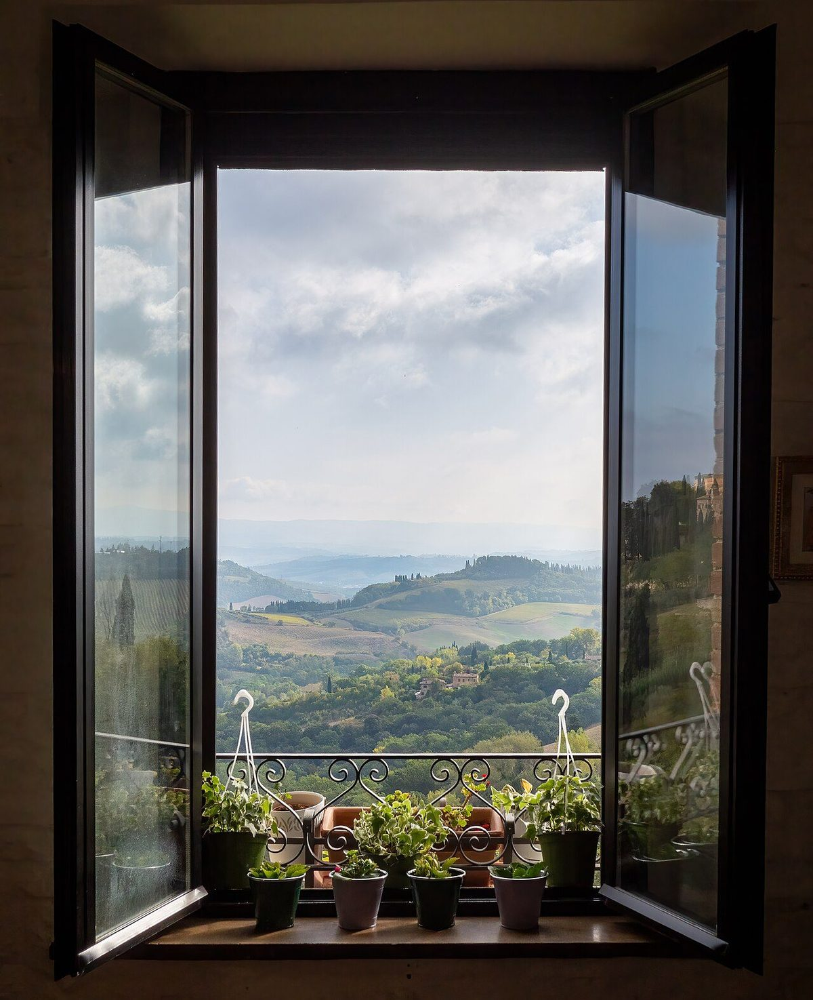
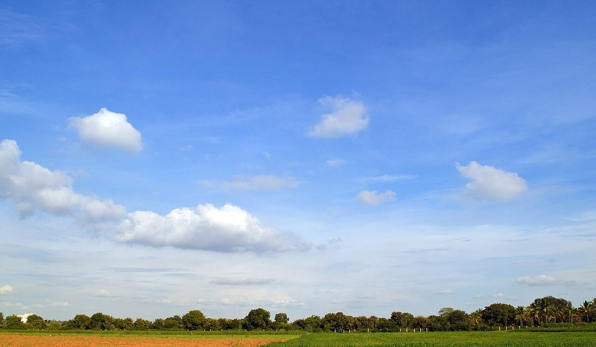

店のこと
店のこと
お店について確認できているのは、所在地とInstagramのアカウントだけです。
このページの「想像してみる」部分は、制作側が想像して書いたものです。お店の実際の様子・考え・メニューとは関係がありません。
確認できていること
- 店名と業種「87wa」、カフェ
- 所在地千葉県八千代市吉橋1348-1(〒276-0047)
- 連絡電話番号はなし。Instagramから
- 準備中営業時間・定休日・メニュー・価格・ご予約・駐車場

想像してみる
「87wa」を足し算で読む
由来は分かりません。制作側は、8と7を足して15になるように、ちがう二つが出会って一つの時間になるお店かもしれない、と連想しました。たとえば、ひとりでも、誰かとでも、気楽に立ち寄れる場所。そんな姿を思い浮かべています(実際のお店の姿ではありません)。
8 + 7 = 15



町のこと
八千代市について
お店の所在地は千葉県八千代市です。このページでは市の特色などには触れていません。お店と地域の関わりが分かり次第、掲載します。